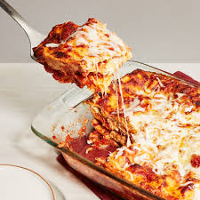

Lasagna
Home

Description
This classic lasagna recipe features layers of tender pasta
sheets, hearty meat sauce made with ground beef and tomato,
and creamy béchamel or ricotta cheese. Each layer is stacked
with flavor and baked until bubbling and golden. It's a
comforting, satisfying meal that's perfect for family dinners,
holidays, or any time you want a rich and delicious dish.
Ingredients
- Lasagna sheets
- 1 lb ground beef
- 1 onion (chopped)
- 2 to 3 cups tomato sauce or marinara
- Ricotta cheese or béchamel sauce
- Shredded mozzarella cheese
- Grated parmesan cheese (optional)
- Salt, pepper, and Italian seasoning to taste
- Olive oil for cooking
Steps
- Cook the lasagna sheets according to package instructions. Drain and set aside.
- In a pan, heat olive oil and sauté chopped onion. Add ground beef and cook until browned.
- Stir in tomato sauce and season with salt, pepper, and Italian herbs. Let it simmer for 10 to 15 minutes.
- In a baking dish, start layering: meat sauce, lasagna sheets, ricotta or béchamel, and mozzarella. Repeat layers.
- Top with a final layer of cheese and optional parmesan.
- Bake in a preheated oven at 375°F (190°C) for 30 to 40 minutes until golden and bubbling.
- Let it rest for 10 minutes before serving.